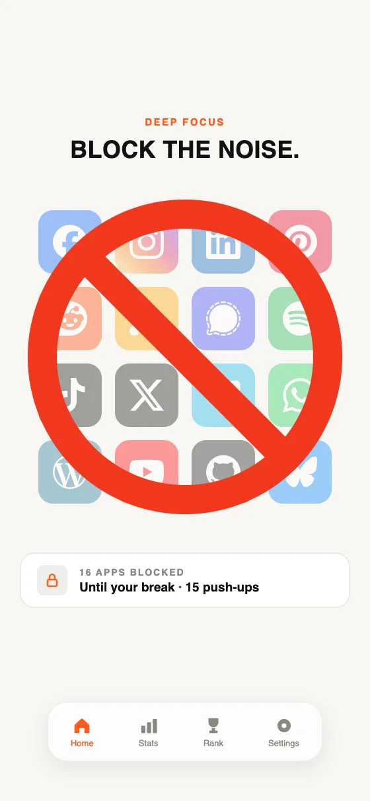
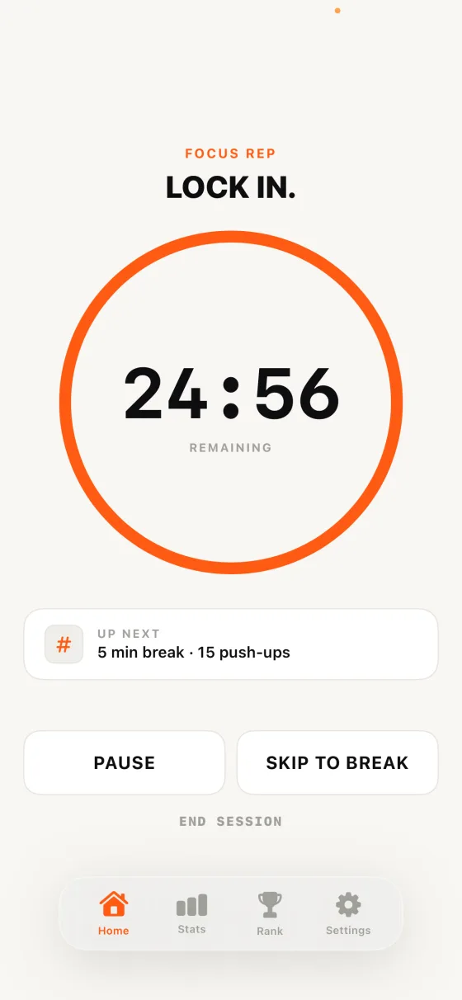
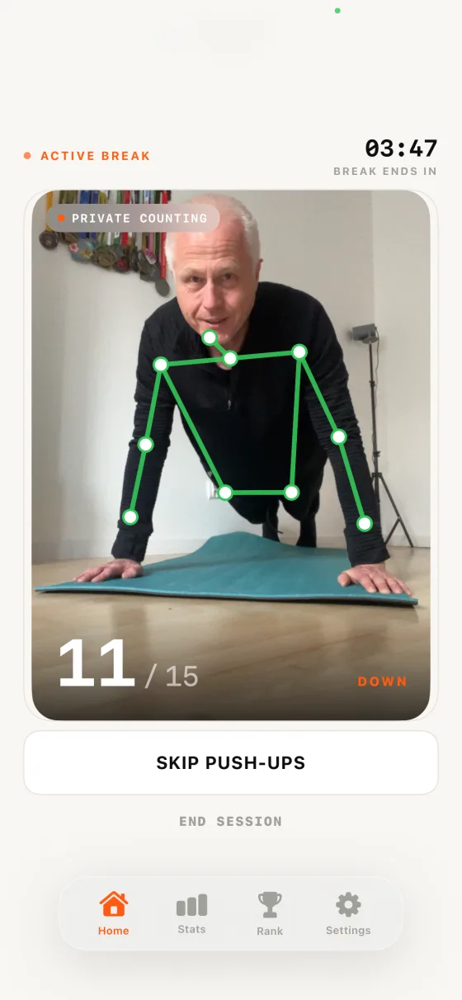
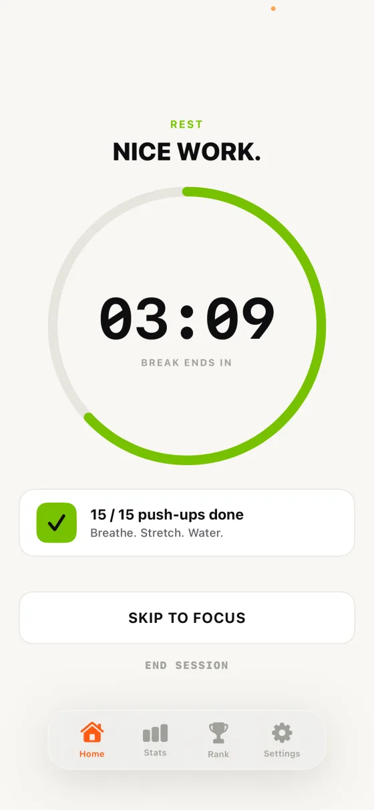
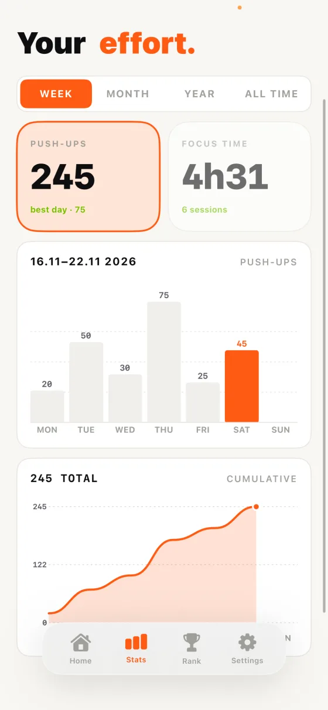

Camera rep counter
On-device pose detection counts push-ups in real time. Shallow reps do not count. Nervous tics do not count.
Inside the app





Focus timer apps leave the break empty, so you scroll. Rep counters live in a different app you forget to open. By 6 PM nothing moved. FocusReps makes the break the exercise, and the camera makes sure it actually happened.
A short burst of movement that fits inside a normal work break. Ten pushups. Ninety seconds. No gym, no change of clothes, no app to open. Sports scientists call these exercise snacks.
A 2022 review by Islam, Gibala and Little in Exercise and Sport Sciences Reviews defines them as isolated bouts of vigorous exercise under one minute, repeated through the day. In a 2019 study by Jenkins et al. in Applied Physiology, Nutrition, and Metabolism, sedentary adults doing three short stair climbing bouts a day, three days a week, improved VO2 peak by about five percent in six weeks. The pattern interrupts the metabolic cost of prolonged sitting. You do not need a workout. You need the body to stop being still.
The math is on your side. Ten pushups per break. Four breaks in a workday. That is forty pushups you did not do yesterday. Two hundred a workweek. Eight hundred a month. Nine thousand six hundred in a year. You will not feel it on Tuesday. You will feel it in October. Nothing changed except the break.
How it works
Default is 25 and 5 with 10 push-ups. Block distracting apps for deep focus. Change it or just hit start.
Timer runs in the background. Your blocked apps stay closed until the break. No streak pressure.
Prop the phone. Step in frame. The camera counts every rep in private mode. No recording, nothing leaves your phone.
When you have your push-ups done, rest and relax during the break so you get strength for the next focus session.
What it is
On-device pose detection counts push-ups in real time. Shallow reps do not count. Nervous tics do not count.
Default 25 and 5. Fully configurable. Pause without penalty when the meeting starts.
Focus blocks closed. Reps added up. One honest number per week, so sitting all day feels less wasted.
Each active break logs a workout with reps and estimated calories. Opt-in. Off by default.
Nothing leaves the phone. No account, no login, no video stored. Camera runs for the break and dies.
One tap to skip the break. Life happens. Streaks track focus, not perfection.
Research
What research says about exercise snacks: short bursts of movement spread through the day.
smaller blood sugar spikes after meals with 5 min of movement every 30 min
Diaz et al., MSSE, 2023fitness in 6 weeks from three short stair climbs a day
Jenkins et al., APNM, 2019fewer major heart events in women
Stamatakis et al., BJSM, 2024of people stuck with exercise snacks
Systematic review, BJSM, 2025Everything from the demo, plus the parts that need a real app: a focus timer that keeps running in the background, Deep Focus that blocks distracting apps while you work, a Home Screen widget with your weekly push-ups, your stats over time and the Game Center leaderboard.
The receipt
FAQ
Real. On-device pose detection tracks your shoulders from a steady plank. A rep counts only when they drop well below your plank height and come back up. Shallow reps do not count. Nervous tics do not count.
Nowhere. Nothing uploads, nothing saves, no account exists. The camera does one job for your exercise and shuts off.
Push-ups for this version. If you like it I will add next exercises.
Yes. One tap. Life happens. Skipping does not break your focus streak, it just does not count toward reps.
Needs enough light to see your joints. A normally lit room is fine. A dark bedroom with one lamp will be unreliable. The app warns you before you start.
Any iPhone with iOS 17 or later. The camera counter runs on the phone itself.
Yes. Timer, camera counting and stats work without internet. Only the Game Center leaderboard needs a connection.
Your call. We just count what the camera sees. If a fake push-up means something to you, go for it.
Try it free in your browser right now.
Or put FocusReps on your iPhone and make every break count.